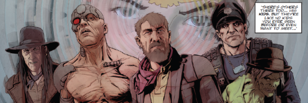

Something of a tour de force, this re-imagines Pa Angel as a somewhat sympathetic character by telling a tale of his early years (pre-Angel Gang), up against a group of corrupt Texas City Judges who've murdered his wife. Part of the interest here is wondering how this history could fit into the one that exists - or even if it means to.
Art by Lee Carter
| Story Title | Parts | Pages | w indicates a wraparound coverCovers | Year(s) | Issues | Writer | Artist | Colourist | Letterer |
|---|---|---|---|---|---|---|---|---|---|
| Angelic | 4 | 36 | 0 | 2015 | M356-M359 | Gordon Rennie | Lee Carter | <-- | Annie Parkhouse |
| Home is the Hunter | 4 | 36 | 0 | 2016-2017 | M377-M380 | Gordon Rennie | Lee Carter | <-- | Simon Bowland |
| Restitution | 5 | 40 | M434: Cliff Robinson & Dylan Teague1 | 2021 | M434-M438 | Gordon Rennie | Lee Carter | <-- | Annie Parkhouse |
| year | episodes | pages |
| 2002 | 0 | 0 |
| 2003 | 0 | 0 |
| 2004 | 0 | 0 |
| 2005 | 0 | 0 |
| 2006 | 0 | 0 |
| 2007 | 0 | 0 |
| 2008 | 0 | 0 |
| 2009 | 0 | 0 |
| 2010 | 0 | 0 |
| 2011 | 0 | 0 |
| 2012 | 0 | 0 |
| 2013 | 0 | 0 |
| 2014 | 0 | 0 |
| 2015 | 4 | 36 |
| 2016 | 3 | 27 |
| 2017 | 1 | 9 |
| 2018 | 0 | 0 |
| 2019 | 0 | 0 |
| 2020 | 0 | 0 |
| 2021 | 5 | 40 |
| 2022 | 0 | 0 |